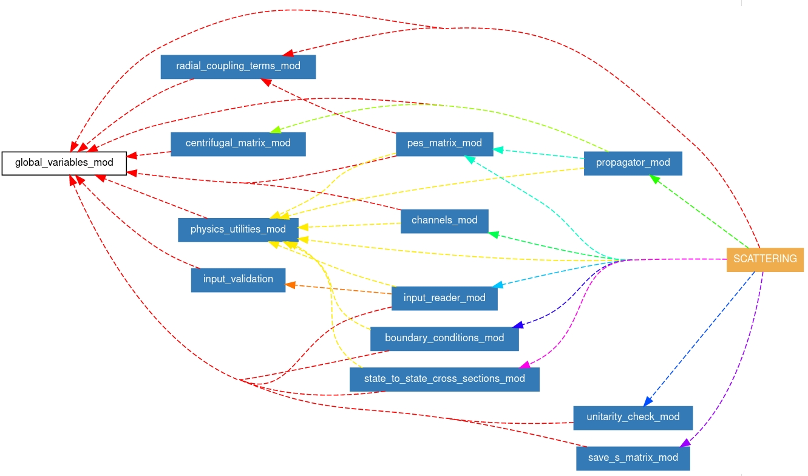

The purpose of the SCATTERING code is to solve the coupled equations for a given scattering system, provide the
scattering S-matrix elements, and calculate the state-to-state cross-sections.
Contrary to other publically available codes, such as MOLSCAT,
or Hibridon, the SCATTERING code solves coupled equations in the body-fixed (BF) frame,
where the coupling matrix exhibits a predominantly block-diagonal structure with blocks interconnected by centrifugal terms.
This significantly reduces computational time and memory requirements.
The theory of non-reactive scattering in systems with arbitrary angular momenta in the BF frame was developed Launay,
and was recently recalled in the context of scattering calculations for He-perturbed shape of HD
rovibrational resonances (see Stankiewicz et al) and O2-perturbed resonances of HCl
(see Olejnik et al).
Structure of the code

- The user controls the code through the input file and by supplying properly-formatted radial coupling terms of the interaction potential.
- The input file is interpreted by input_reader_mod module.
- Radial coupling terms are read and interpolated by subroutines kept in radial_coupling_terms_mod module.
- scattering is the central program.
- After reading the input file and radial coupling terms, the code performs a loop over the total angular momentum and parity.
- For each iteration, the code determines all expansion coefficients
\( g_{\boldsymbol{\lambda},\gamma,\gamma'}^{Jp} \) (see Eq. (3) in the Coupling Matrix section).
- In the next step, the propagation of the log-derivative matrix takes place through numerov that are kept in propagator_mod.
- The resulting BF-log-derivative matrix is transformed to the SF-system using subroutines from boundary_conditions_mod module
which also involves procedures that determine the scattering S-matrix (see Solution of the coupled equations section).
- The main part of the code calls for the partial state-to-state cross sections calculated by subroutines kept in state_to_state_cross_sections_mod.
- The results are written to the S-matrix file (see S-matrix file).
- The output file contains the information about each \( J \)- and \( p \)-labeled block and, if needed,
provides the accumulated state-to-state cross sections.